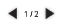
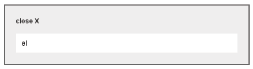

close X
Help
How do I see the annotations?How do I know what annotations are available for a glossed word?
How do I look at different pages?
What does the right click menu do?
How do I access the translation box?
How do I see the annotations?
The annotations bar shown above contains buttons that activate and deactivate the annotations. Click an annotation button to activate the mode, then click a glossed word to see the annotations for that word appear in the annotations window on the right (or in the annotation dialog in pop-up mode).
How do I know what annotations are available for a glossed word?

The bar above the annotations window shows what glossed word is currently active. This bar also displays text, image, audio, and video icons for each annotation type that the glossed word contains.
How do I look at different pages?
Locate the black arrows shown above and click either the left or the right to navigate forward or back. Double-clicking on the page number will bring up a pop-up box that allows to you jump directly to any page number.
What does the Right Click Menu do?
Right clicking activates the Right Click Menu. This menu contains a translate option, as well as a list of the annotation modes that can be used as an alternative to the buttons for activating and deactivating annotation modes.
How do I access the translation box?
Select a word or words that you want to translate. While the selection is still on, right click to bring up the Right Click Menu. Select "Translate". A box containing the translation will appear. To move the box click and drag. To close the box click "close X".